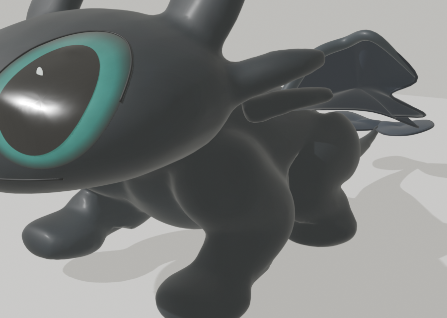
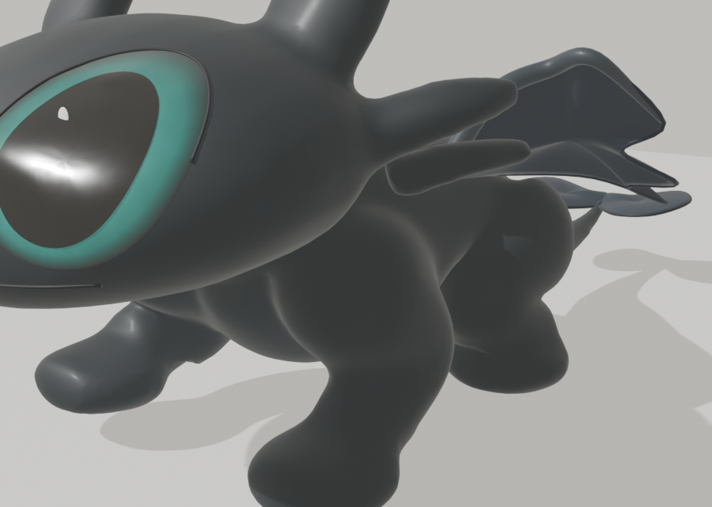
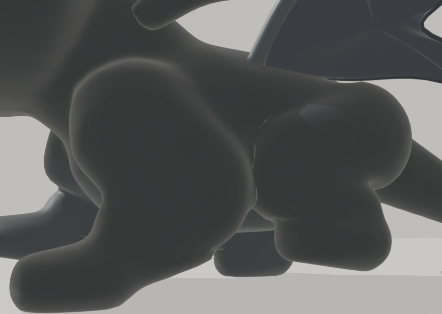
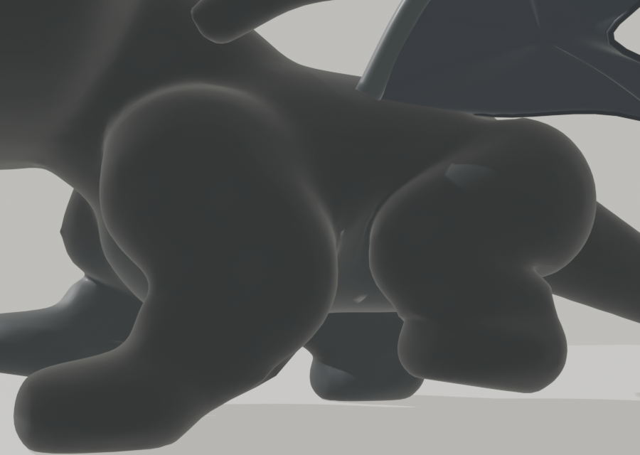
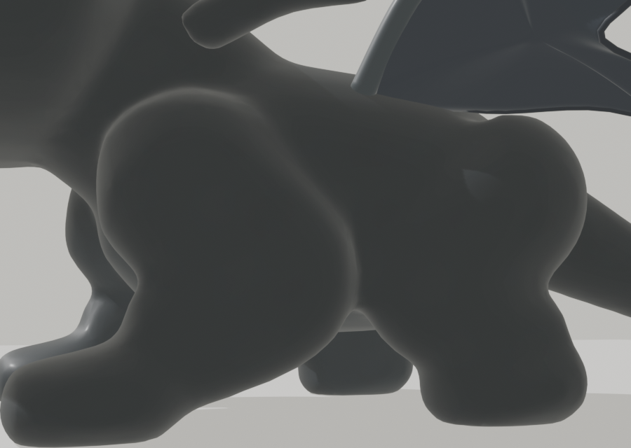
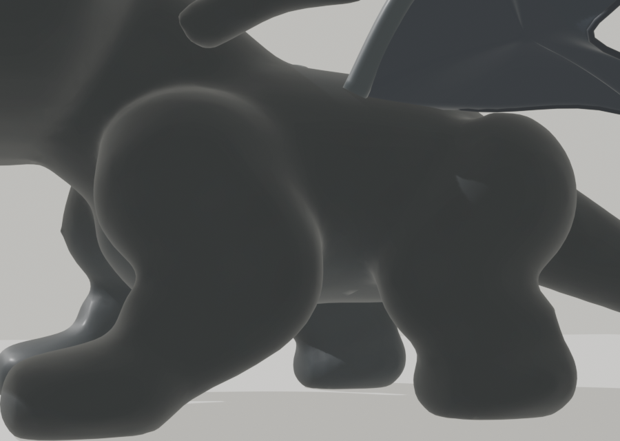

검정 아기 용 · 배와 뒷다리 붙음 수정 비교
왼쪽은 수정 전, 오른쪽은 승인한 수정안의 비교 렌더예요. 걷는 일부 순간에는 두 무릎이 가까워질 수 있어요.
1. 걷는 중 · 질문하신 각도

수정 전

승인한 수정안
2. 걷는 중 · 낮은 옆 각도 (앞다리 ↔ 뒷다리 사이)

수정 전 · 다리 사이가 좁음

승인한 수정안 · 배 아래 간격
3. 서 있을 때 · 낮은 옆 각도

수정 전

승인한 수정안